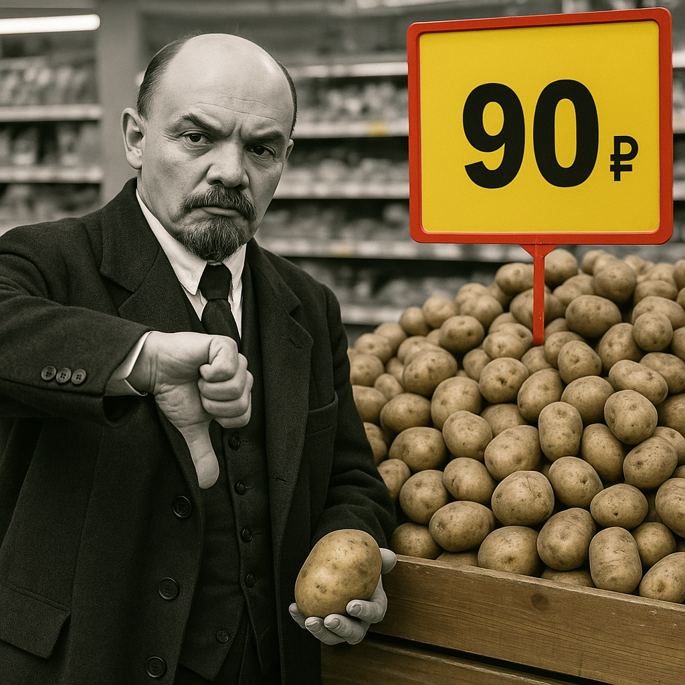

(В.И. ЛЕНИН)
ТОВАРИЩИ! Из глубин истории я обращаюсь к вам с пламенным гневом! Не о поэзии революции речь сегодня, а о хлебе насущном — о картофеле! В сетевых магазинах Москвы этот простой дар земли стоит девяносто рублей за килограмм! Девяносто! Это не цена, а удар по сердцу трудового народа!
Картофель — пища крестьян и рабочих, символ нашей стойкости, — превращён буржуями в предмет роскоши! Это не просто спекуляция, это война против каждого, кто держит лопату или станок! Капитал смеётся над нами, выставляя ценники, как знамёна своего торжества!
Фото: Ленин в гневе перед ценником на картофель
Не крестьянин, чьи руки изборождены трудом, получает эти рубли! Ему платят жалкие копейки — десять, от силы двадцать! А остальное — жирная прибыль перекупщиков, логистических акул и торговых магнатов, разодетых в шелка! Они паразитируют на вашем поте, товарищи!
Эти сетевые монстры — новые кулаки, только вместо барщины у них хитроумные схемы: контракты, штрафы, реклама! Они не пашут, не сеют, но жиреют, накручивая цену вдесятеро! Их “распродажи” — ложь, маскирующая грабёж! Я клеймлю их позором перед всем народом!
Где наш революционный дух? Где комитеты трудящихся? Требуйте контроля над ценами! Пусть каждый магазин станет ареной народного суда! А пока — присоединяйтесь ко мне в борьбе за правду! Подписывайтесь на мой канал и узнайте больше о картофельном заговоре!
Организуйтесь, товарищи! Создайте кооперативы, где крестьянин и рабочий будут хозяевами, а не жертвами! Национализируем эти сети, вернём картофель в ваши дома по честной цене!
ВПЕРЁД К СПРАВЕДЛИВОСТИ! КАРТОФЕЛЬ — НАРОДУ, БАРЫГАМ — ПОЗОР!